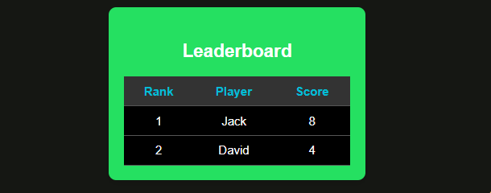
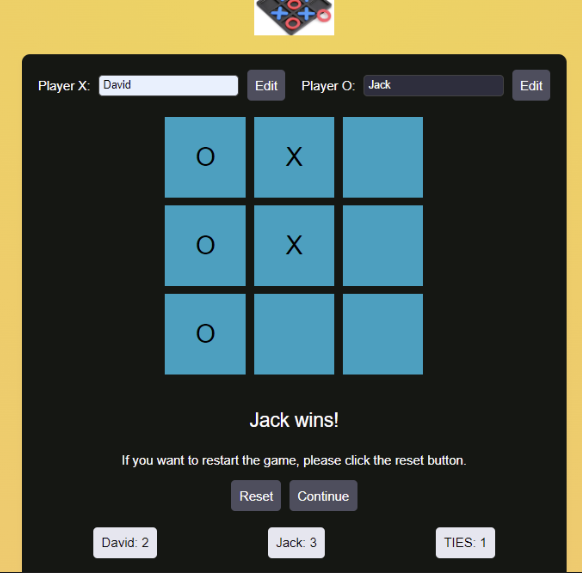
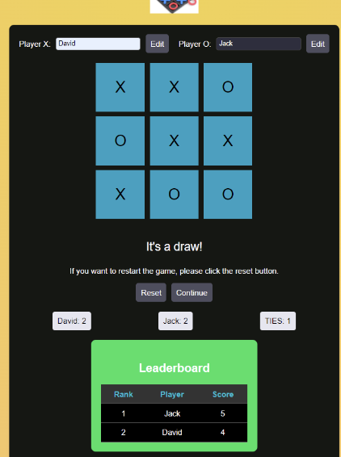
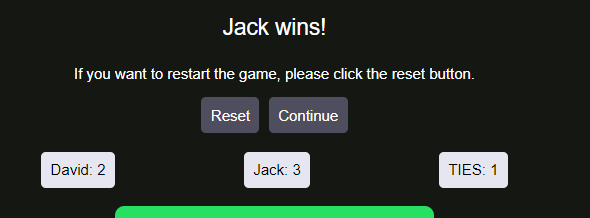

Tic Tac Toe Game
Overview
This is a web-based Tic Tac Toe game that allows two players to compete against each other. The game keeps track of scores, ties, and displays a leaderboard. Players can edit their names, and the game status is updated dynamically. If a player wins or the game ends in a draw, appropriate messages are displayed.
Features
- Two-player Tic Tac Toe game
- Editable player names
- Dynamic score tracking
- Leaderboard with ranking based on scores
- Continue and reset game options
How to Play
- Start the Game: The game starts with Player X's turn.
- Make a Move: Players take turns clicking on cells to make their move.
- Win or Draw: The game ends when a player wins or all cells are filled, resulting in a draw.
- Continue or Reset: After the game ends, players can choose to continue or reset the game.
Procedure to Start the Game
- Clone the Repository: Clone the repository to your local machine.
- Start a Local Server: Start a local server to serve the files. eg: php -S localhost:8000.
Leaderboard

The leaderboard shows the ranking of players based on their scores.
Name Edit
Players can edit their names by clicking the "Edit" button next to their name.
Game Status - Player Wins

When a player wins, a message is displayed indicating the winner.
Game Status - Draw

If the game ends in a draw, a message is displayed indicating the draw.
Player stats

The stats of each player